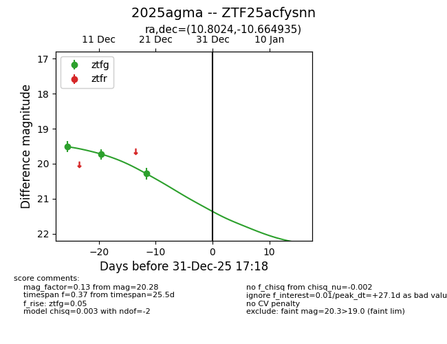
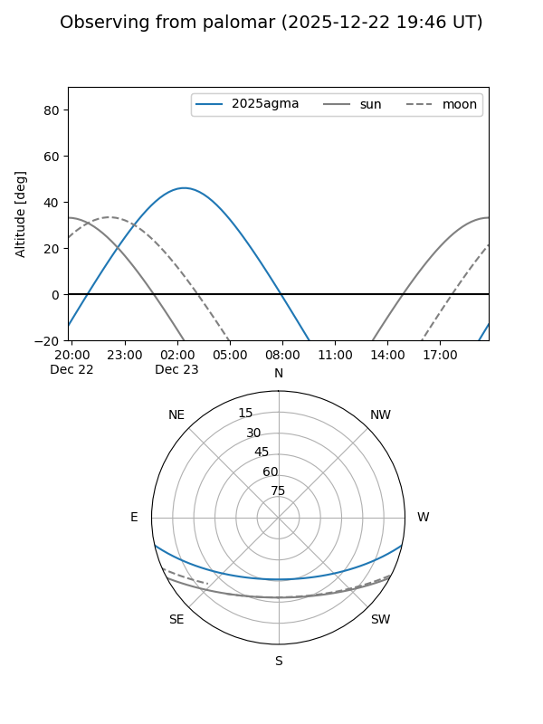
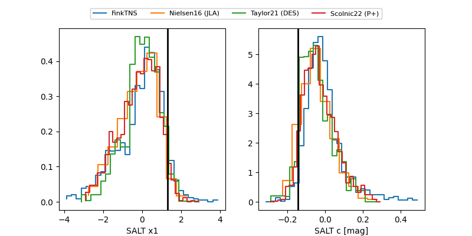

2025agma
Target 2025agma at 2025-12-22 14:03
Aliases and brokers:
FINK: fink-portal.org/ZTF25acfysnn
Lasair: lasair-ztf.lsst.ac.uk/objects/ZTF25acfysnn
ALeRCE: alerce.online/object/ZTF25acfysnn
TNS: wis-tns.org/object/2025agma
YSE: ziggy.ucolick.org/yse/transient_detail/2025agma
alt names
ZTF25acfysnn (ztf,fink_ztf)
2025agma (tns,yse)
Coordinates:
equatorial (ra, dec) = 10.8024,-10.66493
equatorial (HMS+DMS) = 00:43:12.59,-10:39:53.76
galactic (l, b) = (115.8298,-73.42312)
Flags:
Photometry:
last ztfg=20.28
3 ztfg detections
Lightcurve

Visibility


Additional plots
